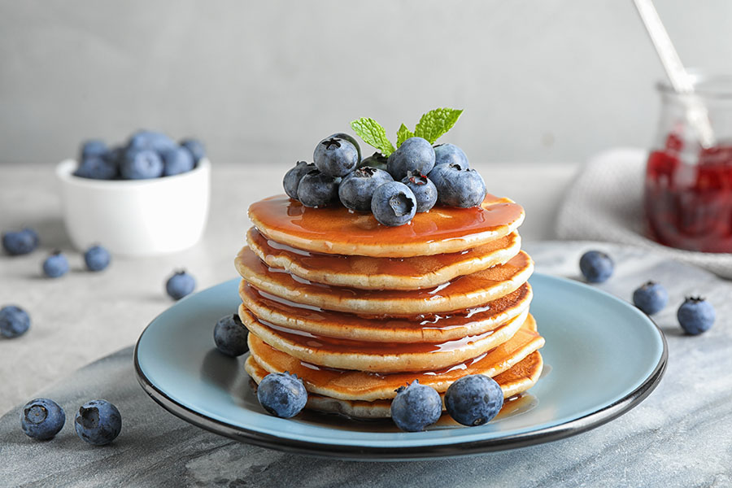

Home
Pancakes

Fluffy soft clouds
Pancakesare flat, round cakes made from a batter of flour, milk, eggs,
and often baking powder or baking soda. They are typically cooked on a griddle or frying pan over low
heat until golden brown on both sides..
Pancakes can be served with a variety of toppings, such as:
Sweet: Butter, syrup, honey, fruit, whipped cream, chocolate syrup, powdered sugar
Savory: Bacon, sausage, ham, cheese, eggs, vegetables
Ingredients
- 1 egg
- 25g sugar
- 15g seeds oil
- a pinch of salt
- 125ml cow milk or plant-based one
- 100g all-purpose flour
- 1 tsp of baking powder
Steps
- Combine the eggs with the sugar
- Gradually add the oil
- Add the milk and mix well
- Combine all the dry ingredients
- Heat a skillet greased with oil
- Pour a ladleful of batter into the skillet and cook over low heat
- Flip the pancake when you see bubbles on the surface and cook for another 2 minutes on the other side
- Continue in this way until the batter is finished and you will have delicious fluffy pancakes!
Fluffy Pancakes stay soft for 2 days. It's best kept them in an airtight container.